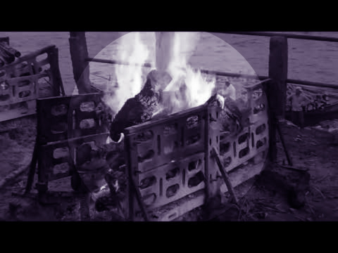
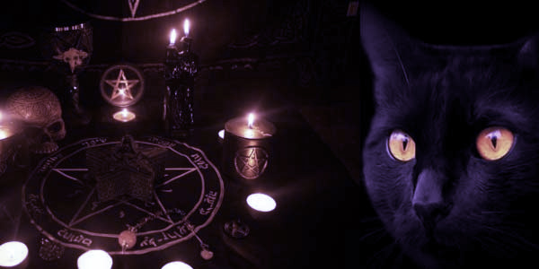

One of the most haunted places in Kolkata, the Nimtala Burning Ghat has fueled the rumours of it being the site of black magic rituals, occult powers, and fearsome sacrifices. If the mere thought of spirits released from the dead bodies and roaming freely in the area is not enough, it is rumoured that the aghoris reign the Ghat during the auspicious occasion of Kali Puja, where they feast on the burned corpses and summon the occult influence to empower themselves. If the horror stories make a chill run down your spine, you can imagine how creepy the place actually is.
A black dog bared its fangs and growled at us as we entered Nimtala Ghat. The smell of burning flesh is known to make canines aggressive so we stepped aside and walked towards where the last rites are usually performed. Today was Bhoothnath Monday so the otherwise-dark ghat was lit up brightly, which was a relief. We called a known local aside and asked him to tell us about any unearthly sightings. “Come on the night of the dark goddess (Kali Puja),” he said, “The Aghoris will be here.”

“The who?” asked one of the three French girls from the tour.
The A-G-H-O-R-I-S, said our man, spelling it out because these are words best not said aloud. They consume the leftover flesh of burning bodies and use them for occult powers.
The Nimtala burning ghat is one of the prehistoric as well as most haunted burning ghats of Kolkata. The famous bard Rabindranath Tagore was cremated in this very ghat. It is believed that on the auspicious night of Kali puja, the aghoris come down to this ghat to perform their rites and invoke the Shamshaan Kali who is their ruling deity. They feed on the remainder flesh of the cremated bodies and by performing such rituals they desire to generate occult powers within oneself.
THE END
Thanks,
Feel The Fear